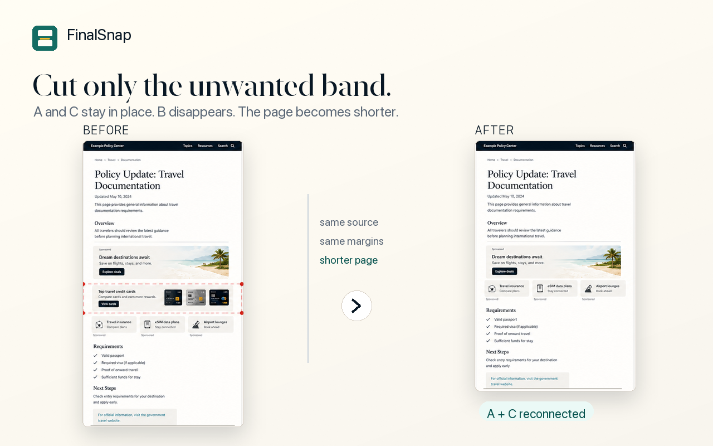

Cut Middle
Remove ads, repeated navigation, oversized empty gaps, or unrelated page bands from the middle of a long screenshot.
FinalSnap is a Chrome extension for people who need to turn messy long webpage screenshots into clean evidence: capture, cut the messy middle, reconnect the remaining page, and export PDF or image records.

Go from a raw long screenshot to a shorter, cleaner record without opening Photoshop or a design editor. FinalSnap focuses on the cleanup work after capture, especially the messy middle sections that make evidence harder to read.
Remove ads, repeated navigation, oversized empty gaps, or unrelated page bands from the middle of a long screenshot.
Close the remaining top and bottom content upward into a cleaner record, so the page becomes easier to review.
Save the cleaned screenshot as PNG, JPEG, or PDF for immigration, legal, research, compliance, or reporting workflows.
If you searched Google for FinalSnap, FinalSnap Chrome extension, or FinalSnap screenshot cleanup, use these official product links.